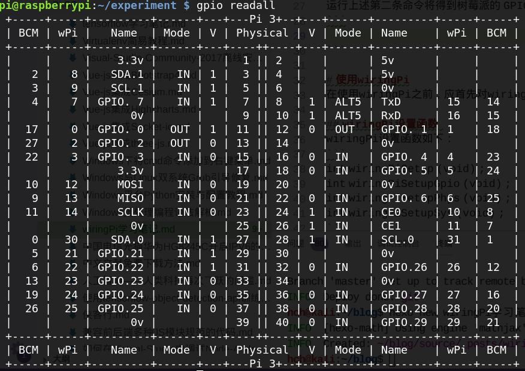

wiringPi学习笔记
wiringPi 库是由 Gordon Henderson 所编写并维护的一个用 C 语言写成的类库。起初,主要是作为 BCM2835 芯片的 GPIO 库。而现在,已经非常丰富,除了 GPIO 库,还包括了I2C 库、SPI 库、UART 库和软件 PWM 库等。
由于其与 Arduino 的“wiring”系统较为类似,故以此命名。它是采用 GNU LGPLv3许可证的,可以在 C 或 C++上使用,而且在其他编程语言上也有对应的扩展。
wiringPi 库包含了一个命令行工具 gpio,它可以用来设置 GPIO 管脚,可以用来读写GPIO 管脚,甚至可以在 Shell 脚本中使用来达到控制 GPIO 管脚的目的。
下载、编译和测试wiringPi
- 下载并编译wiringPi
1 | git clone git://git.drogon.net/wiringPi |
- 测试wiringPi是否安装成功
打开命令终端，可以通过 gpio 命令来检查 wiringPi 是否安装成功，运行下面的命令：
1 | gpio –v |
运行上述第二条命令将得到树莓派的 GPIO 接口之间的对应关系。

使用wiringPi
在使用wiringPi之前，应首先对wiringPi进行设置。
wiringPi设置函数
wiringPi设置函数如下：
1 | int wiringPiSetup (void) ; |
wiringPiSetup (void) 函数
该函数初始化wiringPi，假定程序将使用wiringPi的管脚定义图。具体管脚映射，可以通过gpio readall命令来查看。该函数需要root权限。
wiringPiSetupGpio (void) 函数
该函数与wiringPiSetup函数类似，区别在于假定程序使用的是Broadcom的GPIO管脚定义，而没有重新映射。该函数需要root权限，需要注意v1和v2版本的树莓派是不同的。
wiringPiSetupPhys (void) 函数
该函数与wiringPiSetup函数类似，区别在于允许程序使用物理管脚定义，但仅支持P1接口。该函数需要root权限。
wiringPiSetupSys (void) 函数
该函数初始化wiringPi，使用/sys/class/gpio接口，而不是直接通过操作硬件来实现。该函数可以使用非root权限用户，在此种模式下的管脚号是Broadcom的GPIO管脚号，不wiringPiSetupGpio函数类似，需要注意v1和v2板子的不同。
在此种模式下，在运行程序前，您需要通过/sys/class/gpio接口导出要使用的管脚。你可以在一个独立的shell脚本中来导出将要使用的管脚，或者使用系统的system()函数来调用GPIO命令。
软件 PWM 库
wiringPi 中包含了一个软件驱动的 PWM (Pulse Width Modulation, 脉冲宽度调节)处理库，可以在任意的树莓派 GPIO 上输出 PWM 信号。
但是也有一些限制。为了维护较低的 CPU 使用率，最小的脉冲宽度是 100 微秒，结合默认的建议值为 100，那么最小的 PWM 频率是 100Hz。如果需要更高的频率，可以使用更低的数值。如果看脉冲宽度的驱动代码，你会发现低于 100 微秒，wiringPi 是在软件循环中实现的，这就意味着 CPU 使用率将会动态增加，从而使得控制其他管脚成为不可能。
需要注意的是，当其他程序运行在更高的实时的优先级，Linux 可能会影响产生信号的精度。尽管有这些限制，控制 LED 或电机还是可以的。
使用前,需要包含相应的文件:
1 | #include <wiringPi.h> |
当编译程序时,必须加上 pthread 库,如下:
1 | gcc –o myprog myprog.c –lwiringPi –lpthread |
必须使用 wiringPiSetup()、 wiringPiSetupGpio()或者 wiringPiSetupPhys()函数来初始化 wiringPi。
wiringPiSetupSys()是不够快的，因此，必须使用 sudo 命令来运行程序。
softPwmCreate 函数
该函数的原型为：int softPwmCreate(int pin, int initialValue, int pwmRange);
该函数将会创建一个软件控制的 PWM 管脚。可以使用任何一个 GPIO 管脚 , pwmRange 参数可以为 0(关)~100(全开)。
返回值为 0，代表成功，其他值，代表失败。
softPwmWrite 函数
该函数的原型为: void softPwmWrite(int pin, int value);
该函数将会更新指定管脚的 PWM 值。value 参数的范围将会被检查,如果指定的管脚之前没有通过 softPwmCreate 初始化,将会被忽略。
wiringPi核心函数
pinMode函数
该函数的原型为: void pinMode(int pin, int mode);
使用该函数可以将某个管脚讴置为 INPUT(输入)、 OUTPUT(输出)、 PWM_OUTPUT(脉冲输出)或者 GPIO_CLOCK(GPIO 时钟)。
需要注意的是仅有管脚 1(BCM_GPIO 18)支持 PWM_OUTPUT 模式,仅有管脚 7(BCM_GPIO 4)支持 CLOCK 输出模式。
在 Sys 模式下,返个函数没有影响。你可以通过调用 gpio 命令在 shell 脚本中来设置管脚的模式。
digitalWrite 函数
该函数的原型为: void digitalWrite(int pin, int value);
使用该函数可以向指定的管脚写入 HIGH(高)或者 LOW(低),写入前,需要将管脚设置为输出模式。
wiringPi 将任何的非 0 值作为 HIGH (高)来对待,因此, 0 是唯一能够代表 LOW (低)的数值。
digitalRead 函数
该函数原型： digitalRead(int pin);
使用该函数可以读取指定管脚的值，读取到的值为HIGH（1）或者LOW（0），该值取决于该管脚的逻辑电平的高低。
时间函数
delay 函数
该函数的原型为：void delay(unsigned int howLong);
该函数将会中断程序执行至少 howLong 毫秒。因为 Linux 是多任务的原因，中断时间可能会更长。需要注意的是，最长的延迟值是一个无符号 32 位整数，其大约为 49 天。
delayMicroseconds 函数
该函数的原型为：void delayMicroseconds(unsigned int howLong);
该函数将会中断程序执行至少 howLong 微秒。因为 Linux 是一个多任务的系统，因此中断时间可能会更长。需要注意的是，最长的延迟值是一个无符号 32 位整数，其大约为 71分钟。
延迟低于100 微秒，将会使用硬件循环来实现；超过 100 微秒，将会使用系统的nanosleep()函数来实现。
优先级/时间/线程
wiringPiISR 函数
该函数的原型为：int wiringPiISR(int pin, int edgeType, void (*function)(void));
该函数会在指定管脚注册一个中断事件的函数，当指定管脚发生中断事件时，会自动调用该函数。
edgeType 参数可以为 INT_EDGE_FALLING（下降沿）、INT_EDGE_RISING（上升沿）、INT_EDGE_BOTH（上升沿或者下降沿）或者 INT_EDGE_SETUP。如果是INT_EDGE_SETUP，将不会初始化该管脚，因为它假定已经在别处设置过该管脚（比如使用 gpio 命令），但是，如果指定另外的类型，指定管脚将会被导出并初始化。完成此操作使用的是 gpio 命令，所以，必须保证 gpio 命令是可用的。
注册函数在中断触发时，将会被调用。在调用注册函数前，中断事件将会从分配器中清除，所以，即使有后续的触发发生，在处理完成前，也不会错过此次触发。（当然，如果在正在处理触发时，有不止一个的中断发生，已经发生的中断将会被忽略）。
I2C库
wiringPi 包含了一个 I2C 库，来让您能够更轻松的使用树莓派的板上 I2C 接口。在使用 I2C 接口之前，您可能需要使用 gpio 命令来加载 I2C 驱劢到内核中：
1 | gpio load i2c |
如果你需要的波特率是 100Kbps，那么您可以使用如下命令设置波特率为1000Kbps：
1 | gpio load i2c 1000 |
使用 I2C 库，需要包含 wiringPiI2C.h 文件。并且编译时，同样需要使用-lwiringPi 来连接到 wiringPi 库。
您仍然可以使用标准的系统命令来检测 I2C 设备，如 i2cdetect 命令，需要注意的是，在 v1 版本的树莓派上是 0，v2 版本上是 1，如下：
1 | ls /dev/i2c-1 |
当然，您也可以使用 gpio 命令来调用 i2cdetect 命令，从而检测 I2C 讴备，返样就不用在乎您的树莓派版本了，如下：
1 | gpio i2cdetect |
wiringPiI2CSetup 函数
该函数的原型为：int wiringPiI2CSetup(int devId);
该函数使用指定设备标示号来初始化 I2C 系统。参数 devId 是 I2C 设备的地址，可以通过 i2cdetect 命令可以查到该地址。该函数会获取树莓派的版本并依据此打开/dev 目录下对应的讴备。
返回值是标准的 Linux 文件句柄，如果有错误，则返回-1。
比如，流行的 MCP23017 GPIO 扩展器的设备 ID 是 0x20，所以，你需要将这个数值传递给 wiringPiI2CSetup()。
wiringPiI2CWrite 函数
该函数的原型为：int wiringPiI2CWrite(int fd, int data)；
简单的设备写操作。一些设备可以接受数据，而不需要发送任何内部寄存器地址。
wiringPiI2CRead 函数
该函数的原型为：int wiringPiI2CRead(int fd)；
简单的设备读操作。一些设备可以直接读取，而不需要发送任何寄存器地址。
wiringPiI2CWriteReg8 和 wiringPiI2CWriteReg16 函数
该函数的原型为：
int wiringPiI2CWriteReg8(int fd, int reg, int data); int wiringPiI2CWriteReg16(int fd, int reg, int data);
使用返两个函数，可以写一个 8 位或 16 位数值到指定的设备寄存器。
wiringPiI2CReadReg8 和 wiringPiI2CReadReg16 函数
该函数的原型为：
int wiringPiI2CReadReg8(int fd, int reg); int wiringPiI2CReadReg16(int fd, int reg);
使用返两个函数，可以从指定的设备寄存器读取一个 8 位或 16 位的数值。
参考链接
- 树莓派 wiringPi 用户手册 , by 科技爱好者博客
- Wiring Pi
- Pthreads 入门教程,by hanbingyan.